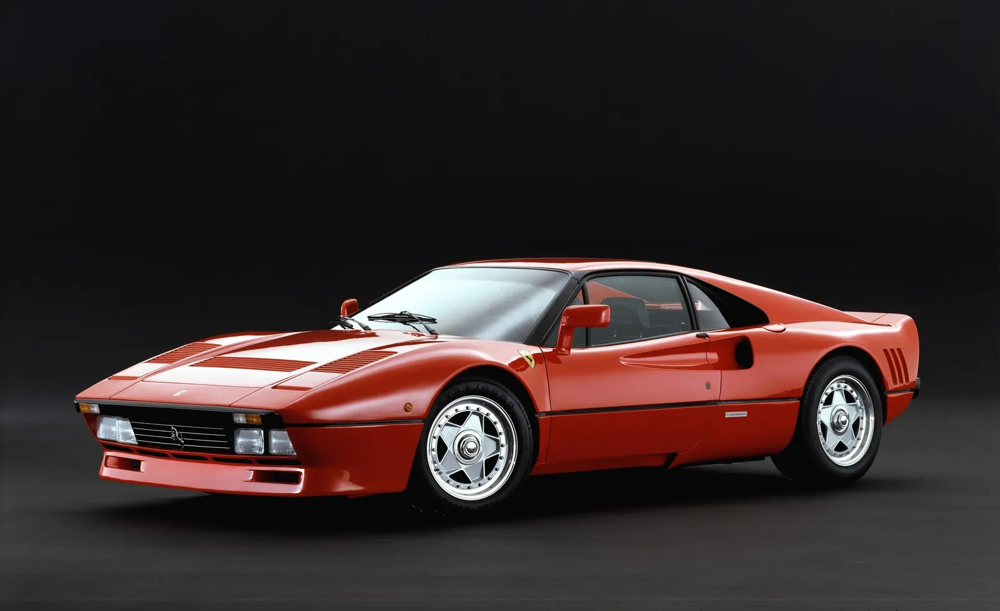

El legado de Ferrari en el automovilismo
Ferrari es una de las marcas más reconocidas en la historia de los autos deportivos. Fundada por Enzo Ferrari en 1939, la marca italiana logró convertirse en símbolo de velocidad, lujo y exclusividad. Sus modelos han marcado generaciones enteras gracias a su diseño elegante y su increíble rendimiento.
Desde sus primeras participaciones en competencias hasta la Fórmula 1, Ferrari construyó una identidad única dentro del mundo automotriz. Cada vehículo representa pasión por la ingeniería y una tradición que continúa evolucionando con el tiempo.